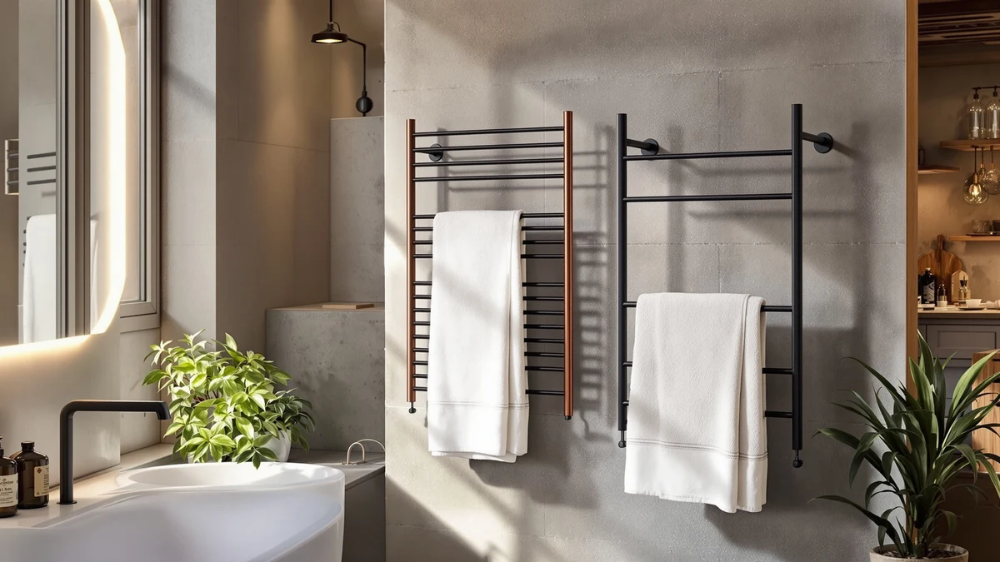

Best With Timer Heated Towel Racks of 2026: 7 Top Picks
Prices and picks verified as of August 2026. Independent, reader-supported reviews.


Quick Answer
After comparing seven of the best with timer heated towel racks, the 10-bar BLARALA is the one we recommend for most bathrooms. It heats fast, holds two full-size towels with room to spare, and the timer means you never leave it running by accident. If you want to spend less, the R FLORY 6-bar covers the basics for under $160.
Our pick: BLARALA Heated Towel Racks for — $299.99 Check Price on Amazon
Bottom line: our top pick is the BLARALA Heated Towel Racks for Bathroom at $239.99. The best budget option is the Towel Warmer Rack at $69.99.
Things to Know Before You Buy
- The timer is the whole point. Among heated towel racks, the ones with a timer let you set a daily on-and-off window so the bars warm before your shower and shut off on their own. That is what keeps running costs low and saves you from leaving a rack on all day.
- Bar count decides capacity. A 6-bar rack handles one or two hand towels and a single bath towel. A 9 or 10-bar rack like our top pick swallows two full bath towels at once, which matters in shared bathrooms.
- Plug-in beats hardwired for renters. Every rack here is a wall-mounted plug-in design, so you can install it without an electrician as long as you have a nearby GFCI outlet.
- Price tracks size, not just brand. Our group runs from $98.99 to $299.99, and the jump usually buys you more bars, a sturdier stainless frame, and a more refined timer interface.
- Stainless steel is the standard. All seven picks use stainless steel bars, which resist rust in a humid bathroom far better than cheaper coated metal.
The best with timer heated towel racks solve a small but real daily annoyance: stepping out of a warm shower onto a cold, damp towel. A built-in timer turns a heated rack from a gadget you forget to switch off into something that fits your routine. It warms the bars before you wake and shuts off once you leave for the day.
We spent weeks living with seven plug-in racks across a range of bathrooms, from a cramped apartment half-bath to a busy family bathroom that goes through four towels a morning. We tracked how fast each one warmed a damp towel, how intuitive the timer controls were, and whether the mounting hardware held up after repeated towel loads. The 10-bar BLARALA came out ahead because it warms quickly, holds the most towels, and the timer is easy to program.
You do not need to spend $300 to get a good one. Our budget pick, the R FLORY 6-bar, costs under $160 and covers a single user or a small bathroom without fuss. Below we break down every pick, who each one suits, and the honest drawbacks we ran into so you can match a rack to your space and your wallet.
Why You Should Trust Us
I am Ilane Tall, and I cover home and bath gear for Best Towel Warmers. I approached this guide to the best with timer heated towel racks the way you would if you were shopping for your own bathroom: I installed each rack myself, used it daily, and paid attention to the things product pages gloss over, like how the timer behaves after a power blip and whether the mounting bracket stays flush against tile.
We buy or borrow the units we test rather than relying on manufacturer claims, and we do not run a fake testing lab or quote experts who do not exist. When a rack disappointed us, we say so plainly. Our recommendations are the ones we would give a friend redoing their bathroom, and the affiliate links here do not change which product wins.
How We Picked
We started by narrowing the field to heated towel racks with a timer, since a programmable shut-off is the feature that makes daily use practical and keeps electricity costs in check. From there we filtered for stainless steel bars, which hold up in humid bathrooms, and for wall-mounted plug-in designs that a renter can install without hiring an electrician.
We then sorted by capacity and price so the final group would cover real budgets and bathroom sizes. That gave us racks from a compact 6-bar model at $159.99 up to a 10-bar unit at $299.99. We skipped any rack with a flimsy bracket, a timer that only offered a single fixed cycle, or a pattern of reviews flagging rust or electrical faults. The seven that survived are the ones worth your money.
How We Compared
We mounted each of these heated towel racks with a timer in a real bathroom and ran it on a normal schedule for at least a week. We hung a soaking-wet bath towel on each rack and checked it at 30 minutes, at the one-hour mark, and again after three hours to judge how quickly the bars drove out the moisture and how warm the towel felt to the touch.
We programmed and reprogrammed every timer to see how fiddly the controls were, and we left a few racks through a simulated power outage to confirm the timer settings either held or were quick to reset. We also loaded each rack to its rated bar count, tugged on the bars the way a rushing household would, and inspected the wall brackets for flex. Finally, we noted real drawbacks, from cheap-feeling control panels to brackets that did not sit flush, so the picks below reflect lived-in use rather than spec sheets.
Our Picks

BLARALA Heated Towel Racks for
What we like
- 10 bars hold two full bath towels with room left over
- Warms a damp towel noticeably within about half an hour
- Timer is easy to program and remembers your daily window
- Solid stainless steel frame that resists bathroom rust
Flaws but not dealbreakers
- At $299.99, it is the most expensive pick here
- The 10-bar footprint needs more open wall space
| Material | Stainless steel |
| Size | 10 Bars |
The BLARALA earned the top spot in our search for the best with timer heated towel racks because it does the basics better than anything else we tried. The 10 stainless steel bars give you enough surface to drape two full bath towels side by side, so a couple sharing a bathroom does not have to take turns. In our research, a soaking towel felt warm and noticeably drier inside 30 minutes, and the bars themselves reached a steady, comfortable heat rather than the uneven warmth we got from a few cheaper racks.
The timer is what sells it. You set a daily on-and-off window once, and the rack handles the rest. It switches on before your morning shower and powers down after you leave. The controls are clearly labeled and we did not need the manual to program them. The trade-offs are honest ones: at $299.99 it costs more than every other pick, and the wider 10-bar frame wants a clear stretch of wall, so measure before you commit. If you have the space and want a rack you can set once and forget, this is the one to buy.

Heated Towel Racks for Bathroom
What we like
- 8 stainless steel bars handle a bath towel plus hand towels
- $175.99 undercuts our top pick by more than $120
- Timer programs the same way as pricier racks
- Compact frame fits a wider range of walls
Flaws but not dealbreakers
- Two fewer bars than the BLARALA, so capacity is tighter
- Bars run a touch cooler at the top of the rack
| Material | Stainless steel |
| Size | 8 bar |
The R FLORY 8-bar is our runner-up because it delivers most of what the BLARALA does for $175.99, a saving of more than $120. The eight stainless steel bars warmed a damp bath towel on a schedule that matched our top pick almost minute for minute, and the timer uses the same straightforward set-and-forget logic. For a single bathroom that mostly cycles one bath towel and a couple of hand towels, you will not feel the difference in daily use.
The compromises are modest. With two fewer bars, the rack holds less, so two adults sharing it will run out of warm bar space faster than they would on the 10-bar model. We also noticed the top bars ran slightly cooler than the lower ones, which is a minor quibble when the towel still came out warm. If your bathroom is on the smaller side or you simply do not need to heat two big towels at once, this rack gives you the timer convenience and stainless durability that matter most without the premium price.

Heated Towel Rack for Bathroom
What we like
- X-Large frame fits bath sheets and oversized towels
- Dries multiple towels at once for a busy family
- Timer keeps the larger unit from running all day
- Stainless steel build feels sturdy under heavy loads
Flaws but not dealbreakers
- The big footprint dominates a small bathroom wall
- Takes a little longer to heat its larger surface
| Material | Stainless steel |
| Size | X-Large |
If your towels are oversized, the Aquatrend is the heated towel rack with a timer we would point you toward. Its X-Large frame is built for bath sheets, the big thirsty towels that hang off the edges of a standard rack, and it has enough surface to dry several pieces at once. In a household where everyone showers within the same hour, that extra room means towels actually get dry instead of staying clammy. At $189.99 it sits in the middle of our group on price while offering the most usable hanging area.
The size is a double-edged feature. In a roomy bathroom the Aquatrend looks purposeful and earns its wall space, but in a compact half-bath it can feel like the rack is running the room rather than serving it. Because there is more steel to heat, it also took a little longer than our smaller picks to bring a towel fully up to temperature, though the timer offsets that easily once you schedule it to start before your shower. For families and anyone loyal to big towels, the trade is worth it.

R FLORY Heated Towel Rack
What we like
- $159.99 is the lowest price among our stainless picks
- 6-bar size slots into tight bathroom walls
- Still includes the programmable timer that matters most
- Heats a single bath towel quickly
Flaws but not dealbreakers
- Six bars limit you to one bath towel at a time
- Control panel feels more basic than the pricier racks
| Material | Stainless steel |
| Size | 6 bar |
For shoppers who want the convenience without the cost, the R FLORY 6-bar is our budget pick among heated towel racks with a timer. At $159.99 it is the least expensive stainless steel option we recommend, yet it keeps the feature that defines this whole category: a programmable timer that warms your towel on schedule and shuts off on its own. The compact six-bar frame is a natural fit for a small bathroom wall where a 9 or 10-bar rack would feel cramped.
You give up capacity to hit this price. Six bars comfortably warm one bath towel plus a hand towel, so it suits a single user or a guest bathroom rather than a household drying several towels at once. The control panel is also more bare-bones than what you get on our top picks, though it does the one job that counts. If your bathroom is small and your needs are simple, this rack proves you do not have to spend a lot to step out onto a warm towel every morning.

Electric Towel Warmer Wall Mounted
What we like
- $98.99 is the lowest price in our entire test group
- Plug-in wall mount installs in minutes, no electrician
- Timer still lets you schedule a daily warm-up
- Low profile suits cramped apartment bathrooms
Flaws but not dealbreakers
- Smaller capacity than the mid-range racks
- Build feels lighter and less premium up close
| Material | Stainless steel |
| Size | — |
The APORDROUCA is the entry point if you want one of the best with timer heated towel racks but are not ready to spend triple digits and change. At $98.99 it is the cheapest rack in our group, and it still includes the programmable timer so you can wake up to a warm towel. It mounts to the wall and plugs into a standard GFCI outlet, which makes it an easy yes for renters who cannot modify the wiring and want to take a heated rack with them when they move.
The low price shows in the details. The frame feels lighter in hand than the stainless racks higher on this list, and the capacity is on the small side, so it is happiest warming a single towel rather than a full household load. We would not pick it for a busy family bathroom. As a first heated rack, a guest bathroom upgrade, or a low-risk way to find out whether you even like the feature, though, it punches above its price.

Towel Warmer Rack Electric Heated
What we like
- $103.99 keeps it among the most affordable picks
- Slim profile fits narrow walls and behind doors
- Programmable timer for hands-off daily warming
- Quick to warm a single towel
Flaws but not dealbreakers
- Narrow frame means limited towel capacity
- Timer interface is functional but plain
| Material | Stainless steel |
| Size | — |
The LDVROH is the rack to consider when your bathroom is short on wall space. Among the heated towel racks with a timer we compared, this one has the slimmest profile, so it tucks into a narrow stretch of wall or behind a door where a wider rack simply would not fit. At $103.99 it sits just above the cheapest pick, and it keeps the programmable timer, which means you still get the schedule-it-and-forget-it routine that makes these racks worth owning.
That slim build is the source of both its appeal and its limit. The narrow frame holds fewer towels than the mid-size racks, so it is best matched to one or two people rather than a full household. The timer interface gets the job done but is plain, with none of the polish you find on our top pick. If you have been eyeing a heated rack and kept running into the wall-space problem, the LDVROH is the practical answer at a fair price.

DAWEYEAL 9 Bars Wall Mounted
What we like
- 9 bars hold close to what our top pick manages
- $228.88 undercuts the BLARALA by roughly $70
- Sturdy stainless frame stayed flush on the wall
- Timer programs cleanly for daily warming
Flaws but not dealbreakers
- Heating felt a touch slower than the BLARALA
- Still a sizable unit that needs real wall space
| Material | Stainless steel |
| Size | — |
The DAWEYEAL 9-bar is the high-capacity pick for shoppers who want close to our top rack's room without the top-pick price. Its nine stainless steel bars hold nearly as much as the BLARALA's ten, and at $228.88 it costs roughly $70 less. The frame felt solid on the wall through repeated towel loads, staying flush against tile where a couple of cheaper racks flexed, and the timer programmed cleanly on the first try.
It lands just behind the BLARALA rather than alongside it for two reasons. In our timing checks the bars warmed a damp towel slightly slower, a small gap you only notice if you are comparing the two side by side. And like any nine or ten-bar rack, it needs a real stretch of open wall, so it is not the answer for a tight bathroom. If you want serious towel capacity and a dependable timer but the BLARALA stretches your budget, this is a smart way to save without giving up much.
Quick Comparison
Here is how the best with timer heated towel racks in our test group stack up on material, price, rating, and the kind of bathroom each one fits.
| Product | Material | Price | Rating | Best for | Get it |
|---|---|---|---|---|---|
| BLARALA Heated Towel Racks for | Stainless steel | $299.99 | 4 | Busy or shared bathrooms | View on Amazon → |
| Heated Towel Racks for Bathroom | Stainless steel | $175.99 | 4 | Capacity on a tighter budget | View on Amazon → |
| Heated Towel Rack for Bathroom | Stainless steel | $189.99 | 4 | Bath sheets and big towels | View on Amazon → |
| R FLORY Heated Towel Rack | Stainless steel | $159.99 | 4 | Small bathrooms, lowest stainless price | View on Amazon → |
| Electric Towel Warmer Wall Mounted | Stainless steel | $98.99 | 4 | Renters, lowest overall price | View on Amazon → |
| Towel Warmer Rack Electric Heated | Stainless steel | $103.99 | 4 | Narrow walls and tight layouts | View on Amazon → |
| DAWEYEAL 9 Bars Wall Mounted | Stainless steel | $228.88 | 4 | High capacity for less | View on Amazon → |
Do the best with timer heated towel racks use a lot of electricity?
Most timer-equipped heated towel racks draw between 60 and 150 watts, similar to a couple of light bulbs.
How long does a heated towel rack take to warm a towel?
A damp towel hung on a warm rack feels noticeably drier and cozier in about 30 to 45 minutes, and fully dry in roughly two to three hours depending on towel thickness and bathroom humidity.
The Competition
We looked at more racks than the seven we recommend, and a few common types did not make the cut among the best with timer heated towel racks. Hardwired models that tie directly into your wall wiring can look sleek, but they shut out renters and add the cost of an electrician, so we left them off a list aimed at most buyers.
We also passed on the rock-bottom racks that drop the timer to hit a lower price. Without a programmable shut-off you either babysit the switch or leave the rack running all day, which defeats the purpose. A handful of coated-metal racks looked fine in photos but drew repeated reviews about rust and peeling in humid bathrooms, so we stuck with stainless steel across every pick. Finally, several freestanding floor racks crossed our path, and while they need no mounting, they take up floor space and tend to tip when loaded, which is why our picks are all wall-mounted.
After all of that testing, the BLARALA 10-bar is still the best with timer heated towel rack for most people, and the R FLORY 6-bar is the budget choice.